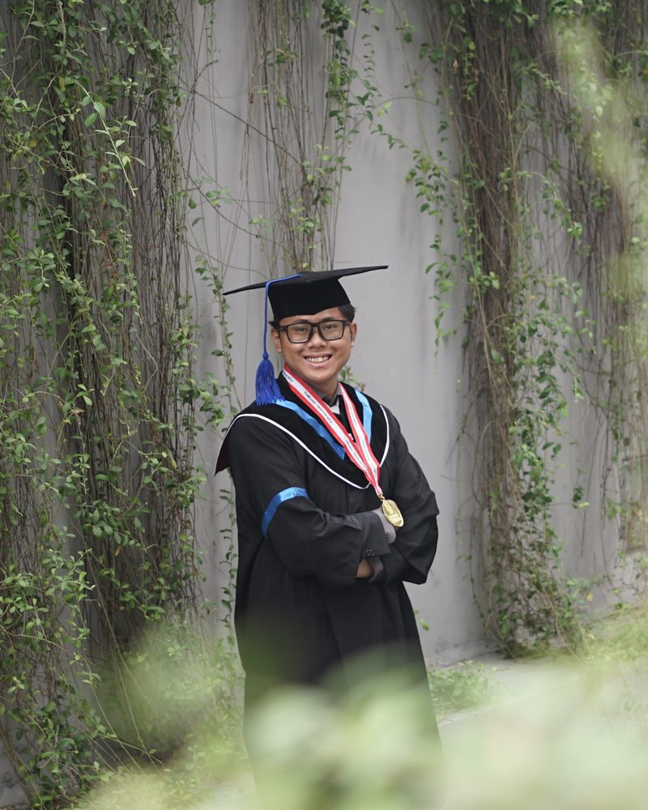

Rendy Ryan Renaldi
Engineering Physics Graduate | Instrumentation, Calibration & Equipment Monitoring
Engineering Physics graduate from Telkom University with hands-on experience in sensor integration and calibration, electrical circuit testing, troubleshooting and technical documentation through 2 engineering internships and 3 laboratory teaching roles.
Seeking an entry-level role in instrumentation, calibration, equipment monitoring or maintenance support in manufacturing, energy or process industries.
Download CVExplore
Feed cards will appear here (Stage 5).